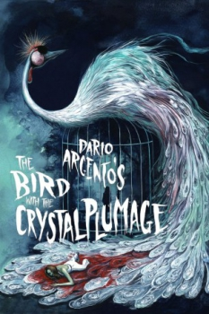
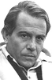
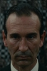

Also known as:L'uccello dalle piume di cristallo (original title)
Country:Italy, 96 minutes
Spoken languages:Italian
Genres:Horror, Mystery, Thriller
Director(s):Dario Argento
Writer(s):Dario Argento, Fredric Brown
Video Codec:Unknown
Number: 479


Certification:
Storyline:
An American writer living in Rome witnesses an attempted murder that is connected to an ongoing killing spree in the city, and conducts his own investigation despite himself and his girlfriend being targeted by the killer.
Cast:  
Medium: Bluray,
Loaned: No
Aspect ratio: Unknown